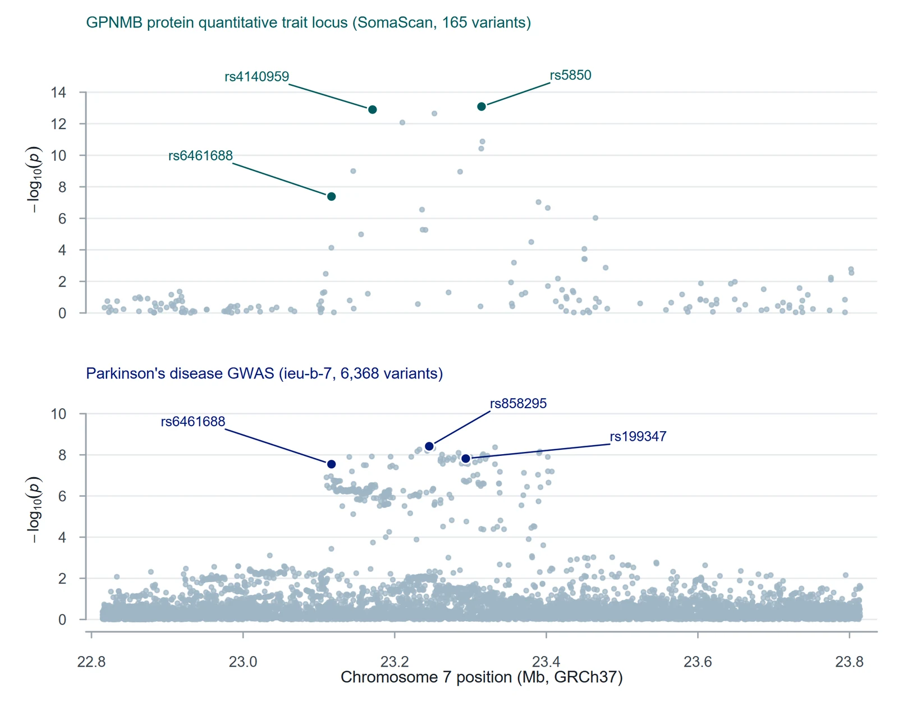
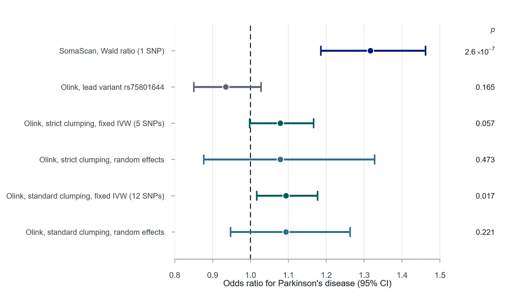
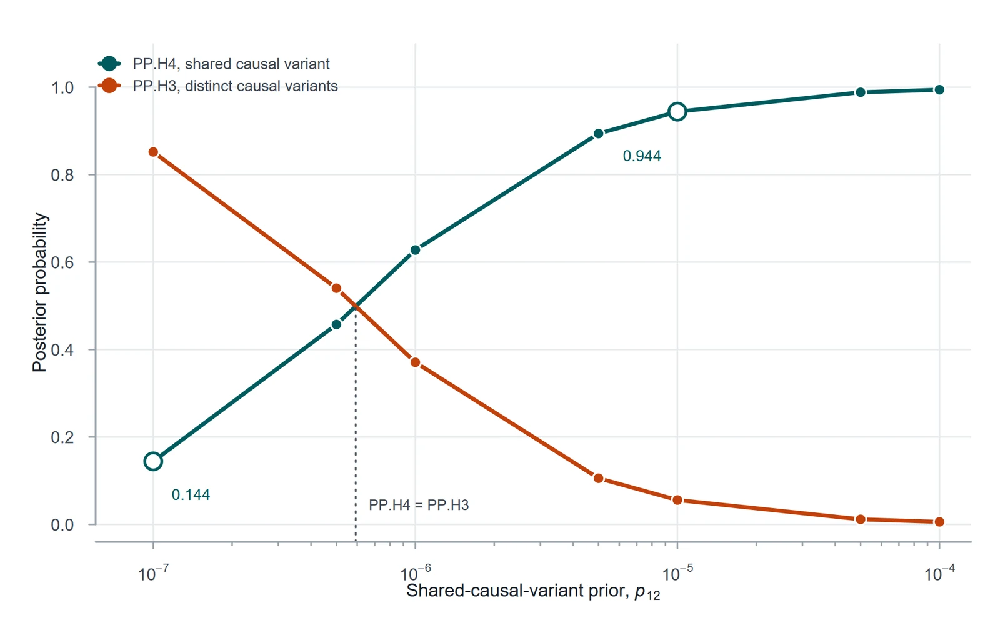

MSc dissertation · Statistical genetics
Prioritising GPNMB as a Parkinson’s disease-relevant protein
Integrated two-sample Mendelian randomisation, LD-aware sensitivity analysis, Bayesian colocalisation and transcriptomic evidence to evaluate GPNMB as a Parkinson’s disease-relevant target. The SomaScan cis-instrument gave a strong association and colocalisation supported a shared signal, but heterogeneous Olink instruments meant the conclusion stops at prioritisation rather than causality.

Is GPNMB a plausible Parkinson’s disease protein?
GPNMB sits at a known Parkinson’s disease risk locus on 7p15.3. The dissertation asked two linked questions: are genetically predicted GPNMB protein levels associated with Parkinson’s disease risk, and are the protein and disease associations consistent with a single shared causal variant in the region, rather than two nearby signals in linkage disequilibrium?
Two proteomic platforms, three kinds of evidence
I analysed GPNMB protein QTLs from two platforms against Parkinson’s disease GWAS summary statistics, then checked whether the result held up under every sensitivity analysis I could justify.
- SomaScan MR. Harmonised the SomaScan GPNMB exposure with the PD outcome and estimated a single-instrument Wald ratio at rs5850.
- UKB-PPP Olink MR. 4,338 harmonised regional records → 790 QC-filtered genome-wide significant variants → European-reference LD clumping at strict, standard, sensitivity and liberal thresholds (5, 12, 12 and 25 instruments).
- Heterogeneity. Fixed-effect IVW with Cochran’s Q; when Q showed strong heterogeneity, multiplicative random-effects IVW recalculated from the saved instrument sets.
- Colocalisation. coloc.abf across 150 overlapping SNPs, a sweep of the shared-variant prior (p12), and SuSiE on 146 SNPs to allow for more than one signal at the locus.
- Supporting layers. Cross-tissue eQTL evidence (GTEx, Open Targets) and brain RNA expression.
A strong signal that weakens under scrutiny
The SomaScan instrument gave OR 1.32 (95% CI 1.19–1.46; P = 2.6×10−7). The Olink instruments pointed the same way under fixed effects (strict OR ≈ 1.08, p = 0.057; standard OR ≈ 1.09, p = 0.017), but Cochran’s Q was large (p ≈ 10−5) and the random-effects estimates were not significant (strict p = 0.473; standard p = 0.221).

Under the main prior, colocalisation supported a shared causal variant (PP.H4 = 0.944). The prior sweep shows how much that depends on assumptions: at stricter shared-variant priors (p12 below about 10−6) the evidence favours distinct variants instead, and SuSiE pointed to unresolved multi-signal structure at the locus.

What I would and wouldn’t claim
The final interpretation prioritises GPNMB for further study rather than treating the evidence as causal closure.
What it supports
- A strong single-instrument association between genetically predicted GPNMB and PD risk.
- A shared regional signal under standard colocalisation priors.
- GPNMB as a reasonable candidate for follow-up work.
What it doesn’t show
- Causality: one SomaScan instrument cannot test heterogeneity or horizontal pleiotropy.
- Robustness across platforms: Olink random-effects estimates were not significant.
- A single clean causal variant: colocalisation depends on the prior and on multi-signal locus structure.
Packaged so it can be audited
- Analysis scripts, saved final instrument sets, derived results and figure-generation code in one supplementary package.
- The random-effects IVW and Cochran’s Q results can be rerun from the saved clumped instruments without new OpenGWAS API calls.
- R session information, source-file provenance and figure notes are included; Figures 2–5 regenerate from saved outputs with one script.